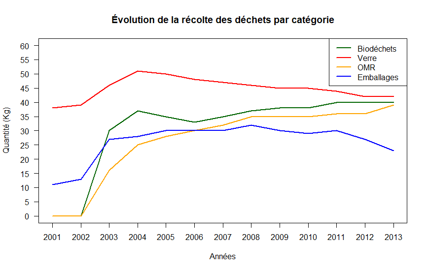
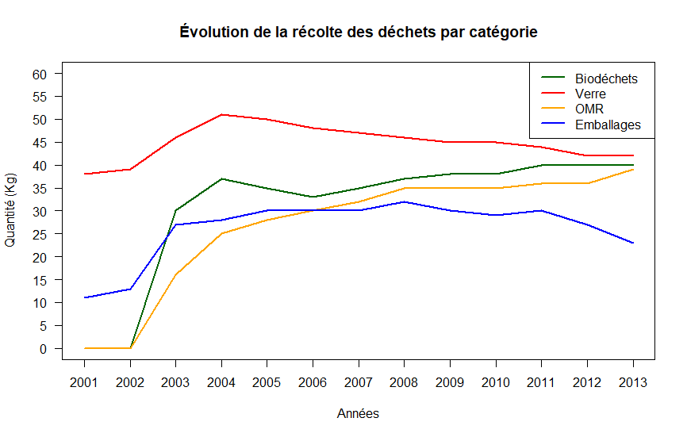

Le diagramme en boîte des biodéchets par typologie montre que les communautés de communes intermédiaires et peu denses ont des similitudes, contrairement aux communautés de communes densément peuplées. Globalement, ces dernières génèrent beaucoup moins de biodéchets. Les raisons de cette différence ne sont pas connues, mais il est essentiel de prendre en compte ces résultats si vous envisagez la mise en place d'un système de tri des biodéchets.
Quant à l'évolution de la collecte des déchets par catégorie, le graphique ci-dessous provient d'une communauté de communes ayant instauré son système de tri en 2002. Nous pouvons constater qu'il faut environ deux ans pour que la tendance se stabilise, même si dans les années qui suivent, elle continue de croître lentement.

Le graphique ci-dessus représente un graphique de clustering. Sa compréhension peut être difficile, c'est pourquoi je vais tenter de l'expliquer. Nous avons voulu tester la possibilité de retrouver les typologies sans indiquer leur label en utilisant les autres données. Cependant, avec une précision de seulement 50%, les résultats sont peu concluants. Ce résultat concerne surtout les communautés intermédiaires et denses, en raison du manque de données dont nous disposons. Par conséquent, nous vous recommandons d'être particulièrement critiques et attentifs vis-à-vis des conseils qui vous sont donnés pour ces communautés.